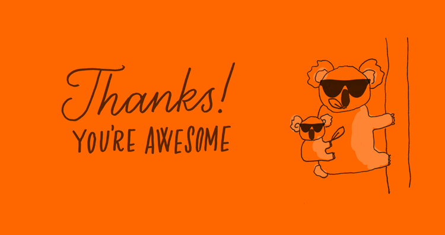

Tim Lucas
@toolmantim
Tim Lucas
@toolmantim
Published
Thank you!
Wow, what an amazing few days we had last week. 230 people, 166 tacos, 82 burgers, 70 bahn mi sambos, 8 kilos of bananas, 400 delicious coffees, 200 tees, and a whole lotta orange!
Videos of the talks are now available online
To everyone who bought a ticket and came along on the day, thank you! Never did we think we'd get such a great turnout. It felt like a very special mix of creative coder types, and almost all from Australia or surrounding countries, many whom we'd never have met otherwise. This event was for you, and we hope you enjoyed every minute!

A big thank you to our speakers who put their love, sweat, tears and experience into sharing their inspiring work, stories and ideas: Nicole, Chris Wright, Nicolas, Connor, Ana, Chris Giffard, Lea, Simurai and Chris Eppstein. We didn’t even ask what they were going to talk about because we knew they’d all be great. And they were! Thank you so much for your support.
Also a big thank you to the 50 other amazing people who submitted a talk proposal but ultimately weren’t selected. It takes time, energy and courage to submit a proposal, and it killed us to have to choose only a couple. A massive thank you to all of you!
To the friends and volunteers who put up their hand to help, and who, without clear direction or preparation, came together to make the day not only hitch-free but fun and carefree as well. Thank you!
To Jared and the JSConf crew: thank you for providing the perfect sister-event, helping with the logistics, supporting our crazy ideas and also helping on the day of CSSConf.
To the Decompress crew: Mark Dalgleish and Paul Taggell. Paul contacted us to see if he and Melbourne Uni could help in any way. We then asked Mark if he could put his MelbJS know-how into creating, organising and running a side-event. A cross between a Jelly, a meetup, and an unconf. And what transpired was absolutely perfect. Thank you to you both, and those who helped on the day.
And most importantly, thank you to our sponsors. We were lucky enough to have amazing companies approach us and then wait patiently whilst we prepared our sponsorship packages. Thank you to our major sponsor Campaign Monitor who were responsible for the world-class coffee and beautifully hand-lettered coffee cups. Thank you to our second level sponsor Envato, our third level sponsors realestate.com.au and Pin Payments, and finally 99designs and SitePoint. Without your support the event simply wouldn’t have happened.
And lastly, to the people that worked alongside us providing their skills and services: Everyday Coffee for the amazing coffee and sweets; Taco Truck, Beatbox Kitchen, Banh Mi Boys for the delicious food; Jim and the rest of Arts House Melbourne for helping us transform the gorgeous heritage listed venue; Carla Hackett for the lettering, illustration, signage, and tees; SC&F for the CSSConf stage sign; Hilary Walker for the photography; PSI Screen Printing for the tees; and Anthony Agius for the filming, screen capture and editing.
We’re busily preparing the videos of all the talks, which should be up soon for everyone to see. But for now, we just wanted to say thank you.
From the entire CSSConf crew: thank you all for an amazing few days which we’ll never forget.